特殊定義
ざっくり纏めると「音ゲーとして最低限必要なパーツの定義」です。
プレイスキンのノーツ定義や選曲スキンの選曲バー定義などが該当します。
用途が完全に固定されているため、基本的に他の種別のスキンでは動作しません。
汎用定義では使用しなかったindex値（専用op値のようなもの）でその種別を指定する定義が多々あります。
また、その定義でしか使用しない専用パラメータもいくつか出てきます。
なお、これらの定義は原則として1つのスキン内で1個しか定義できません。（ただしindex値が異なる場合は別定義扱い）
このためDST行のop1〜3のスロット分岐は定義しても意味がありません。（IF分岐は可能）
いくつかの定義では2P側用の定義が存在しますが、これはプレイサイドを示すものではなく
1P用・2P用定義がともに存在する場合、つまりバトル・DP用です。（リザルトではバトル時のみ）
※DPとBATTLE
イメージとしてはDPスキンでのJUDGEやCOMBO定義は左右共に1P用定義っぽく思えたりもするんですが、
LR2ではレーンが2つあるスキンでは必ず片方が1P用定義、もう片方が2P用定義になります。（timerも47 2Pジャッジタイマーを使います）
プレイスキン
LR2はプレイスキンでのみ、10キーでない方の数字キーを押しながらカーソルキーで本体側のスキンオプションを設定できます。
利用できるオプションは以下の通りです。
1キー ：スキン位置の変更
2キー ：スキン拡大率の変更
3キー：ジャッジ表示位置の変更
4キー：ノートサイズの変更
5キー：スキン描画制限
6キー：ノート位置（1P）の変更
7キー：ノート位置（2P）の変更
図：曲ロード時間が無視できるほど高速だった場合のプレイスキンにおける各定義とtimerとop80番台の相関図
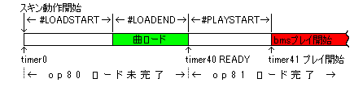
※スキンによって異なるかもしれませんが、DX3.999作成時にはop80とop81の間、
つまり曲ロード後にtimer40が動作開始するまで10ms前後の間がありました。
3.999ではop80とop81で『表示を変えずに定義の重ね順の変更』を行う箇所があったため、
該当箇所のop80を使う定義の動作時間を10ms長く取っています。
- 関連リンク：
- #STARTINPUT
- スキン描画制限の仕様
#SRC_BGA
BGA定義です。
再生開始タイミングや再生速度などは譜面やBGAファイル側で決まっているため、表示サイズくらいしか指定できません。
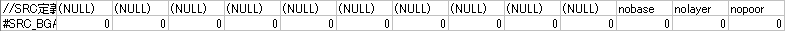
デフォスキンcsvには
SRCはほとんど形式を共通にするためのダミーでしかありませんが、一応表示に関するオプションを設定できます。
nobase、nolayer、nopoor=1にするとその階層のBGAは表示されません。
と書いてありますが、いずれの機能も未実装のためSRC_BGA定義で指定可能なパラメータはありません。
SRC自体がダミーと書いてあるので下手したらDSTのみで動くのかもしれません。
※定義個数制限無し
DST_BGAは省略。
BGA定義テンプレート
カンマ区切り
タブ区切り
#SRC_JUDGELINE
判定ライン定義です。が、実際に判定処理に使われるのはノーツ定義なので注意。
この定義は本体側の疑似LIFTオプションで上下動するパーツを指定するのに使います。
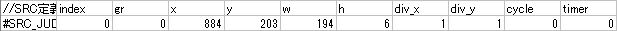
| index | プレイサイドを指定します。
0：1P側 1：2P側 |
DSTは省略。
JUDGELINE定義テンプレート
カンマ区切り
| 1P
|
1P & 2P
|
タブ区切り
| 1P
|
1P & 2P
|
#SRC_LINE
小節線定義です。
必要かどうかはプレイスキンの方向性によりますが、定義しないと
曲開始時にLR2が落ちます。
透明でも良いのでとりあえず定義しておかないとデバッグすら出来ないので気を付けましょう。
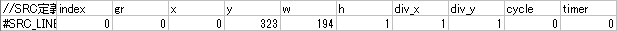
| index | プレイサイドを指定します。
0：1P側 1：2P側 |
DSTは省略。
LINE定義テンプレート
カンマ区切り
| 1P
|
1P & 2P
|
タブ区切り
| 1P
|
1P & 2P
|
#SRC_NOTE
ノーツ定義です。各ノーツの着地点で判定処理が行われるため、特にDST側での定義ミスは避けましょう。
落下方向は↓向き固定となっており、←向きにノートを動かしたりとかは出来ません。
落下開始座標はx座標がDST_x固定、y座標が-DST_h固定になります。
※バトルスキンでは2P側ノーツ定義が存在しないとターゲットスコアが参照できません。
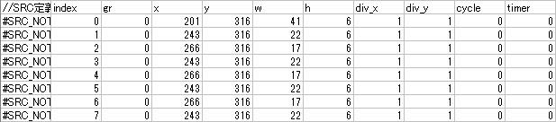
| SRC定義 | ノーツ定義は全部で10種あります。
SRC_NOTE：通常ノーツ SRC_MINE：地雷ノーツ SRC_LN_END：ロングノーツ上端 SRC_LN_BODY：ロングノーツ中間 SRC_LN_START：ロングノーツ下端 SRC_AUTO_NOTE：オートプレイ通常ノーツ SRC_AUTO_MINE：オートプレイ地雷ノーツ SRC_AUTO_LN_END：オートプレイロングノーツ上端 SRC_AUTO_LN_BODY：オートプレイロングノーツ中間 SRC_AUTO_LN_START：オートプレイロングノーツ下端 ※オートプレイ用ノーツ省略時は通常ノーツが表示されます。 |
| index | 0がスクラッチで1〜9が鍵盤です。pmsの場合はindex1〜9で指定します。
2P側は+10。 |
7keys/14keysはそれぞれ5keys/10keysとして使用される場合があるため#SCRATCH定義の設定を忘れずに。
DST定義はレーン単位での指定なので、地雷ノーツなどを異なる横幅にしたい場合はSRC画像側で調整します。
NOTE定義テンプレート
カンマ区切り
| 5keys
|
7keys
|
9keys
|
10keys or 5keys BATTLE
|
14keys or 7keys BATTLE
|
タブ区切り
| 5keys
|
7keys
|
9keys
|
10keys or 5keys BATTLE
|
14keys or 7keys BATTLE
|
#SRC_NOWJUDGE_1P
判定表示です。2P側の定義はSRC_NOWJUDGE_2Pです。
通常はtimer46〜47のジャッジタイマーと組み合わせて使います。
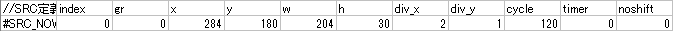
| index | 判定を指定します。
0：空poor 1：見逃しpoor 2：BAD 3：GOOD 4：GREAT 5：PERFECT |
| noshift | NOWJUDGE定義はコンボの幅の半分だけ左に自動的にシフトして表示されます。
シフトをオフにする場合（ジャッジとコンボを二列に分けて表示するときとか）は、noshift=1にして下さい |
noshiftの扱いがちょっとややこしいんですが、これは要するに後述するNOWCOMBO定義とNOWJUDGE定義を合わせて1つの定義とみなして中寄せするための機能です。
最近まで気付きませんでしたがnoshift=1を使う場合であればそもそもこれらの特殊定義を使う必要はありません。（汎用定義で代用可能です）
DSTは省略。DSTでは大体loop-1を使います。
NOWJUDGE定義テンプレート
カンマ区切り
| 1P
|
1P & 2P
|
タブ区切り
| 1P
|
1P & 2P
|
#SRC_NOWCOMBO_1P
コンボ表示定義です。表示される値はNUMBER定義のnum38 RUNNING COMBOと同じですが、
相対座標を使う事で前述のNOWJUDGE定義と組み合わせて中寄せするための専用定義です。2P側定義にはSRC_NOWCOMBO_2Pを使います。
デフォスキンには「NUMBER定義と同じ」と書いてありますがalignや相対座標指定位置などが微妙に違います。
LR2ではBAD以下でコンボが切れるため、index2以下は定義しても意味がありません。
また、DST_NOWCOMBO定義のxy値はDST_NOWJUDGE定義からの相対座標になります。このため、alignによる表示座標特性もNUMBER定義とは異なります。
NOWJUDGE定義のalignもNUMBER定義同様、有効数値部分のみで座標調整されるため裏0はalign0以外では使えません。
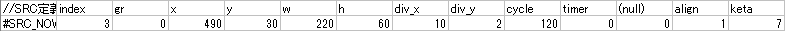
| index | 判定を指定します。
3：GOOD 4：GREAT 5：PERFECT |
| align | 数値定義の配置指定です。
0：左寄せ？ 1：中央 2：右寄せ ※さりげなくNUMBER定義と値が違うので注意。 |
| keta | 表示する桁数を指定します。ketaが少ないときちんと表示されない場合があるので、
「この定義で表示する可能性がある最大値」に合わせておくのがベストです。 |
こちらもDSTでは大体loop-1を使います。
NOWCOMBO定義のalignとDST_xy座標
keta7のNOWCOMBO定義のalign0〜2を一桁〜三桁まで表示させ、一覧にまとめると以下の様になります。
※座標値との関係を見やすくする為に四角い破線で桁埋めてますが、実際には裏0を使ってもこの位置には表示されません。（裏0はalign1・2では必ず数値の右側に出ます）
※赤の実線がNOWJUDGE_x座標、赤の実線から緑の実線までの幅がNOWCOMBO_x座標

NOWCOMBO定義のDST_xyはNOWJUDGE定義からの相対座標指定なので
noshift=0の場合はDST_NOWCOMBO_w値/2だけ左にズレますが、ジャッジも同じように左にズレるので相対距離は変わりません。
また、noshiftの値に関わらずalign0はほぼ使い物にならないことも見て取れます。
align2もこの挙動なら通常のNUMBER定義で作れるため、実質align1固定でしょう。
ジャッジ・コンボ表示のいずれかに拡縮アニメーションが含まれる場合には座標指定がやや複雑になりますが、
align0以外という前提で言えば『最大桁数時の中央の数値の左上座標（あるいはその値-w/2）に合わせる』という点だけ抑えておけばどうにかなります。
NOWCOMBO定義テンプレート
カンマ区切り
| 1P
|
1P & 2P
|
タブ区切り
| 1P
|
1P & 2P
|
#SRC_GROOVEGAUGE
LR2のグルーヴゲージ定義は各色の粒画像を分割で指定します。
ゲージ点灯時の赤・緑、ゲージ消灯時の赤・緑の順に並べてsrc分割を行ってください。
あとは本体側が各粒画像とadd_x add_y、DST定義を用いてグルーブゲージを形成してくれます。
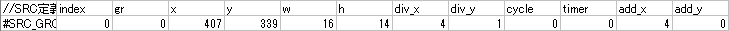
| index | プレイサイドを指定します。
0：1P 1：2P |
| add_x add_y | この値で次の粒の相対位置を指定します。
ゲージ全体の幅をpx単位で指定することは出来ません。（必ず50の倍数になります） 某ゲーム準拠の場合、2P側ではゲージが左右反転するのでadd_xが負の値になり、 DSTのx座標は右端の粒座標を指定することになります。 |
LR2純正のゲージ定義ではゲージ先端に点滅アニメーションが入ります。（OFFに出来ません）
また、粒の数も50粒固定です。
汎用定義の応用で自力で組むことも可能ですが、純正ゲージよりも負荷が高いです。
GROOVEGAUGE定義テンプレート
カンマ区切り
| 1P
|
1P & 2P
|
タブ区切り
| 1P
|
1P & 2P
|
選曲スキン
数ある特殊定義のうち、選曲バー定義のみSRCとDSTでindex値の扱いが異なります。
SRCでは選曲バーの種類を指定するのに対してDSTでは選曲バーの位置を指定します。
このためBAR_BODY定義のみSRCとDSTで別項目にしてあります。
また、特殊定義以外にも選曲スキンには『パネル』という概念があります。
パネルは専用定義がある訳ではなく、汎用定義にtimer21〜39までを使用することで各種パーツをパネルに割り当てて形成します。
パネルボタンがクリックされるとパネルオプションがONに切り替わり、同時にパネルタイマーが動き始めます。
後はパネルタイマーに合わせて画面外から移動させたりフェードインさせたりと色々な方法でパネルオープンのモーションを組めばよくあるパネルになります。
※パネルクローズタイマーもあるのでキッチリ作るとパネル内のボタンやテキストなどの全定義がオープン・クローズで2個ずつ必要になります。
パネル自体は他の種別のスキンでも使用することは可能ですが、選曲スキンでのみ『スタートボタンでパネル1の呼び出し』が行えます。
通常はプレイオプションパネルに使われますが、その気になればスタートボタンでエフェクタパネルを開くことも可能ですし、
それとは逆にプレイオプションパネル内にエフェクタパーツを配置、という手もあります。
#SRC_BAR_BODY
選曲バー定義です。ボタンやスライダーの様な機能を持っており、
加えて相対座標で大量のパーツが連動して動くので選曲の負荷の大部分を占めます。
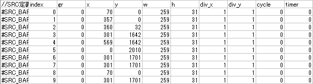
| index | 選曲バーの種別を指定します。
0：曲 1：フォルダ 2：カスタムフォルダ 3：新曲フォルダ 4：ライバルフォルダ 5：曲（ライバルモード用） 6：コースフォルダ 7：コース作成 8：コース 9：ランダムコース |
SRC_BAR_BODY定義テンプレート
カンマ区切り
タブ区切り
#DST_BAR_BODY
SRC_BAR_BODYのindex値がバー種別を指定するのに対してDST_BAR_BODYではバー配置（n本目のバー座標）の指定になります。
動作開始時のバーアニメーションは個別に指定出来ます。
また、これ以降の#DST_BAR_○○定義のxy座標は#DST_BAR_BODYからの相対座標になります。
ちなみに#DST_BAR_BODYが存在しない場合は通常のxy座標として動作します。（大体画面の左上に集中します）
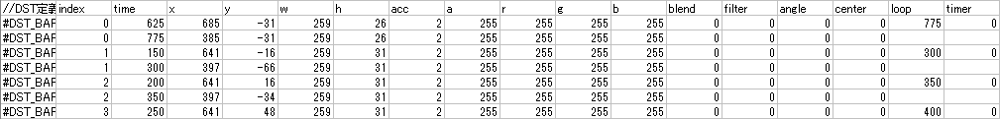
| DST定義 | 選曲バー定義は2通りあります。
DST_BAR_BODY_OFF：カーソルが合っていない時用 DST_BAR_BODY_ON：カーソルが合っている時用 ※BAR_AVAILABLE定義で指定した範囲内の選曲バーには必ずDST_BAR_BODY_ON定義が必要です。 |
| index | SRC側のindex値とは違い、バーの種別ではなく個々の選曲バーの配置毎に個別のindexを使用します。
0〜29まで利用可能なので最大で30個の選曲バーを配置出来ます。 |
DST_BAR_BODY定義テンプレート
カンマ区切り
タブ区切り
関連リンク：DST_BAR_BODY定義の座標補間と特殊配置
#BAR_CENTER
デフォルトで選択状態にするバーの位置をDST_BAR_BODY定義のindex値で指定します。

#BAR_AVAILABLE
選曲バーでクリック可能な範囲をDST_BAR_BODY定義のindex値で指定します。
この値の範囲内の選曲バーにはDST_BAR_BODY_ON定義が必須です。
範囲外のバーをクリックするとバーはスクロールします。
BAR_FLASH定義以外の定義を重ねる場合はBAR_CENTERと同数に固定する必要があります。
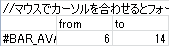
#SRC_BAR_FLASH
フォーカス中のバーに重なって表示されます。DST座標はバーのxy座標からの相対位置を指定して下さい。
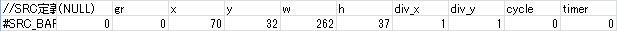
DST定義は省略。
BAR_FLASH定義テンプレート
カンマ区切り
タブ区切り
#SRC_BAR_LEVEL
曲バー上に表示される曲レベル数字用定義です。
基本的にはNUMBER定義と同じですがDST座標はバーのxy座標からの相対位置を指定して下さい。
名前こそNUMBER定義ではないものの、条件が揃えばNUMBER定義同様align2のバグが発生します。
一般的なNUMBER定義に比べて裏0無しのalign2を使う可能性が高いので、
このバグに出会うとすればまずこの定義です。詳しくは関連リンクをご覧下さい。
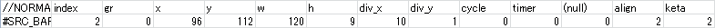
| index | 数字種別を指定します。
0：難易度未定義 1：BEGINNER 2：NORMAL 3：HYPER 4：ANOTHER 5：INSANE 6：IR RANKING ※IR RANKINGは3桁表示できるサイズにしておく必要があります。
|
LR2は難易度未定義譜面には自動的に難易度を割り当てるためindex0：難易度未定義は不要に思えますが、
SETUPオプションの「難度フィルタを使用しない」がONの場合に必要になります。忘れずに必ず作りましょう。
DST定義は省略。
BAR_LEVEL定義テンプレート
カンマ区切り
タブ区切り
#SRC_BAR_LAMP
曲バーのクリアランプ定義です。
DST座標はバーのxy座標からの相対位置を指定して下さい。
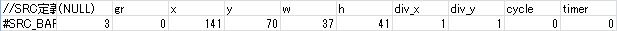
| SRC定義 | BAR_LAMP定義は3種類あります。
#SRC_BAR_LAMP：通常のクリアランプ #SRC_BAR_MY_LAMP：ライバルフォルダ内での自クリアランプ #SRC_BAR_RIVAL_LAMP：ライバルフォルダ内でのライバルクリアランプ |
| index | クリアランプ種別を指定します。
0：NO PLAY 1：FAILED 2：EASY CLEAR 3：CLEAR 4：HARD CLEAR 6：FULL COMBO ※以下は未実装 5：P-ATTACK/G-ATTACK CLEAR？ 7：PERFECT |
DST定義は省略。
BAR_LAMP定義テンプレート
カンマ区切り
タブ区切り
#SRC_BAR_TITLE
曲バーのタイトルです。
DST座標はバーのxy座標からの相対位置を指定して下さい。
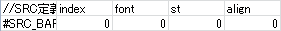
| index | 曲タイトル種別を指定します。
0：通常曲 1：新規追加曲 |
基本的にはTEXT定義なので文字数が多くなるとDSTのw値に収まるように縮小されます。
このためw値は出来るだけ大きめに取った方が被害は少なく済みます。
（デフォスキンでw10000です。参考までに）
DST定義は省略。
BAR_TITLE定義テンプレート
カンマ区切り
タブ区切り
関連リンク：#SRC_TEXT
#SRC_BAR_RANK
ライバルフォルダ内での曲バーのDJランク定義です。
DST座標はバーのxy座標からの相対位置を指定して下さい。
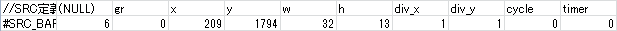
| index | DJランクを指定します。
1：F 2：E 3：D 4：C 5：B 6：A 7：AA 8：AAA |
DST定義は省略。
BAR_RANK定義テンプレート
カンマ区切り
タブ区切り
#SRC_BAR_RIVAL
ライバルフォルダ内での勝敗定義です。
DST座標はバーのxy座標からの相対位置を指定して下さい。
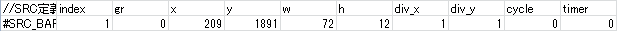
| index | 勝敗を指定します。
0：WIN 1：LOSE 2：DRAW 3：NOT PLAYED |
index3は無理に使う必要はないでしょう。DST定義は省略。
BAR_RIVAL定義テンプレート
カンマ区切り
タブ区切り
#SRC_README
テキストビューアー定義です。
最初の一行分だけ定義し、それ以降は本体側が自動的に無限に下に並べます。
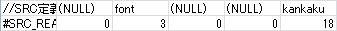
| kankaku | 行間をpx単位で指定します。
|
これもほぼTEXT定義なので改行無しの長文が表示されないことを祈りながらDSTのw値を大きめに取りましょう。（デフォスキンでは99999）
デフォスキンではindex値に1が入ったりしてますが本来は不要です。
DST定義は省略。
README定義テンプレート
カンマ区切り
タブ区切り
関連リンク：#SRC_TEXT
#SRC_MOUSECURSOR
マウスカーソル定義です。
ボタンなどのクリック判定はマウスカーソル定義の左上座標点で行われるため、画像側もこの仕様に合わせる必要があります。
※DST座標で負の値を使えば任意の位置にずらせると思います（未確認）。
マウス停止後、一定時間が経過すると自動的に消えますがフェードアウト関連の設定は存在しません。
また、スキンセレクトやキーコンフィグスキンでも利用されますが、おそらくスキン種別問わず参照可能だと思います（未確認）。
※定義しなくてもボタンやスライダーのクリック自体は可能です。
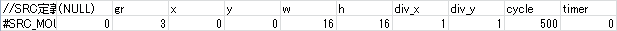
DSTのxy座標は実際のマウスカーソルからの相対座標指定になるので通常はxy共に0です。
MOUSECURSOR定義テンプレート
カンマ区切り
タブ区切り
リザルトスキン
リザルトスキンの設計において最も重要な各種タイマーの説明を先に。
SRC定義内で動作時間を設定する箇所があるのでしっかり把握しておきましょう。
リザルトスキンでは各#STARTINPUT値を過ぎてからマウス・キーボード・コントローラー等から入力が発生するとその次のタイマーが動作します。
※参考画像ではGAUGECHART定義のみ触れていますが、実際にはSCORECHART定義のstart/end値でも個別にスキップ処理が行われます。
図：リザルトスキンにおける各定義とtimerの相関図
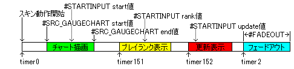
具体例を挙げますと、#STARTINPUT start値を過ぎた状態でチャート描画終了後あるいは描画中であっても入力が発生するとtimer151が動作します。
逆に#STARTINPUT start値を過ぎていて、かつチャート描画終了後でも入力が発生しない限りtimer151は動作しません。
また、チャート描画中にスキップした場合のみ、描画アニメーションは強制的に終了します。
timer151・152はただのタイマーなのでスキップしても個々のアニメーションは継続されたまま次のタイマーも動き始めます。
例：上記設定のリザルトスキンでボタンガチャ押しした場合（つまり最短動作時間）の各定義とtimerの相関図
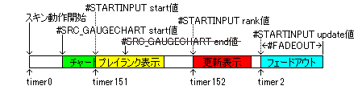
なお、チャート描画こそ存在しませんが各定義とtimerの関係性はコースリザルトスキンでも同様です。
チャート定義だけSRC側に独立した時間制御パラメータがあるのはリザルトとコースリザでほとんど同じ構造を取ることで使い回しやすくしたものと思われます。
- 関連リンク：
- #STARTINPUT
- 特定条件下でのみ参照値が異なる機能
- op330番台のIF分岐
- フルコン落ち時のクリア判定の分岐特性
- リザルトでのプレイスキンとの連携によるクリアマーク更新分岐
- 既フルコン時のMAXCOMBO差分検出によるフルコン分岐
#SRC_GAUGECHART_1P
ゲージ推移定義です。2P側の定義はSRC_GAUGECHART_2Pです。
かなり珍しいパラメータがいくつか含まれているので注意しましょう。
DSTのxy座標は左下座標点を指定します。
また、SCORECHART定義でも同様ですがDSTのwh値はチャートグラフの線の太さになります。
※DST定義のwh値を1にした時、稀に曲タイトルが表示されなくなりました。
デフォスキンでは発生しなかったため、現時点ではRBリザ固有バグ扱いですが一応注意。
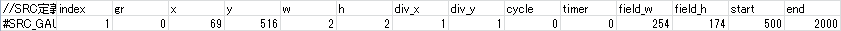
| index
|
ゲージ種別を指定します。
0：緑ゲージ 1：赤ゲージ |
| field_w/field_h | グラフ領域を指定します。 |
| start | グラフの描画開始時間をms単位で指定します。
|
| end
|
グラフの描画終了時間をms単位で指定します。
※各種timerとの連携を考慮して設定しましょう。 |
DST定義は省略。
GAUGECHART_1P定義テンプレート
カンマ区切り
| 1P
|
1P & 2P
|
タブ区切り
| 1P
|
1P & 2P
|
関連リンク：#STARTINPUT
#SRC_SCORECHART
スコア推移定義です。上記と似てますが2P側定義は存在せず、indexでライバルの値を参照する形になります。
それ以外はほぼ同じです。こちらもDSTのxy座標は左下座標点を指定します。
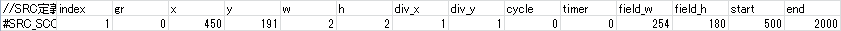
| index
|
ゲージ種別を指定します。
0：今回のスコア 1：自己ベストスコア 2：ライバル（ターゲット）スコア |
| field_w/field_h | グラフ領域を指定します。 |
| start | グラフの描画開始時間をms単位で指定します。
|
| end
|
グラフの描画終了時間をms単位で指定します。
※各種timerとの連携を考慮して設定しましょう。 |
DST定義は省略。
SCORECHART定義テンプレート
カンマ区切り
タブ区切り
関連リンク：#STARTINPUT
その他のスキン
決定・コースリザルト・スキンセレクト・キーコンフィグスキンには専用の特殊定義は存在しません。
（スキンセレクト・キーコンフィグスキンではMOUSECURSOR定義のみ使います）